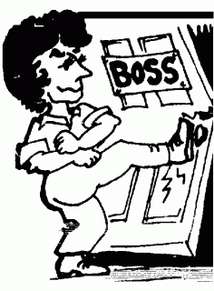

It Took Direct Action to Make This Boss Pay Seattle’s New Minimum Wage
Submitted on Tue, 08/04/2015 - 8:07pm
By Chelsea Harris - Labor Notes, July 23, 2015
“I don’t know who you people are!” barked Joe Walker, the owner of Pandora’s Adult Cabaret, a Seattle-area strip club, to the workers gathered in his office. “Why don’t you all go flip burgers!”
But despite this confrontational language—typical of how he often spoke to employees—within hours Walker would give in to their demand for the back pay he owed them.
As a boss, Walker is abhorrent, showing no respect for or concern for the safety of his club’s servers or dancers. Employees had horror stories of working around bodily fluids and other filth with no safety procedures, frequent illness with no health benefits or sick leave, and dancers being stalked and sexually assaulted at the club.
Add to this abusive language and shady bookkeeping. Managers had told bartenders and servers not to report tips. Instead, managers were reporting employee tips as $5 a week.
On April 1 the Seattle minimum wage went up to $11 per hour (the first step in a process towards a $15 per hour minimum wage, which won’t go into effect for two to six years).
But two weeks later, Walker was still paying his servers the old minimum wage of $9.47. When Alyssa, a server at the club, asked when they could expect a wage increase, she was fired.
Lindsay, another server fed up with Walker’s hostility whenever she asked about wages, put in her two weeks’ notice—but was promptly fired too. “You’re beneath this job,” he told her.
Unfortunately for him, Lindsay is in a union: the Seattle branch of the Industrial Workers of the World (the “Wobblies”), which anyone can join, except people with the power to hire and fire. After meeting with the union’s Seattle general organizing committee, Lindsay and Alyssa began an escalation plan.
MARCHING ON JOE
The first step was issuing a simple letter to Walker outlining what they wanted. Neither wanted her job back—just the amount owed to her from the hours worked after April 1, when she should have started making $11 per hour.
Interestingly, after Lindsay and Alyssa left, Walker finally starting paying the remaining workers the full $11, likely due to the attention they’d brought to the issue.
But that wasn’t good enough. Back pay was still owed.
Lindsay and Alyssa walked confidently into Walker’s office to deliver the letter, followed by a four-person team. One was video-recording the action. Lindsay handed him the letter and summarized the demands.
At first Walker denied it all, but the two workers held firm, reminding him they had pay stubs to prove it. Soon he lost his cool and started yelling at everyone. His jabs were drowned out by clapping as the group left the office—mission accomplished.
The letter, though brief and cordial, implied further action if he didn’t pay up “before we lose our good cheer.”
IT WORKED
Further actions were already being planned. Surely it would take a lot to make stubborn, misogynistic Walker cave in to the demand of two young waitresses.
Later that evening Walker called Lindsay. He threatened to report the two women to the Internal Revenue Service for not reporting tips (which he had told them not to do) and called her an “[expletive] little snot.”
But surprisingly, he also agreed to pay up.
A few days later, Lindsay and Alyssa both had the money they’d demanded. Even better, Walker paid all his other employees back wages as well.
This victory, though relatively small, shows that a new law isn’t all it takes to raise the minimum wage. It also takes worker action to enforce it.
Lindsay and Alyssa could have tried legal avenues first. But any complaints to the city could have taken months to process—and Walker technically had a year to comply with the new wage increase, once notified of a complaint.
Instead, these workers got their money within days—by demanding it themselves, with the support of their union.
Chelsea Harris is a member of the IWW in Seattle. Click here for step-by-step instructions on how to take direct action to get your boss to pay back your stolen wages.